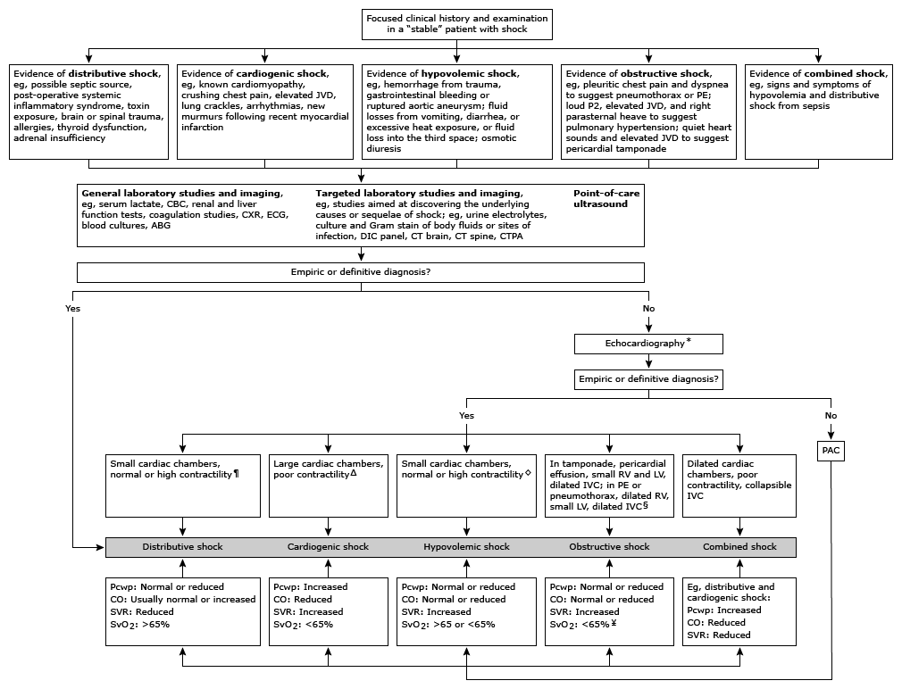

-
經過仔細問診後，你可以根據病人的回答做以下聯想：
-
chest pain
- 痛的位置
1. 可定位：通常是骨骼肌肉問題
2. 難定位：通常是臟器問題
- 痛的型態
1. 絞痛：ACS、pulmonary hypertension
2. 鈍痛：pneumothorax、ACS
3. 灼燒痛：ACS、GERD
4. 撕裂劇痛：aortic dissection
5. 重物壓迫痛：ACS、cardiac tamponade
6. 刺痛：通常是骨骼肌肉問題
7. 抽痛：通常是骨骼肌肉問題
8. 肋膜痛：PE、pneumonia
- 輻射
1. 左肩、左臂：ACS、GERD、pericarditis…
2. 上腹：abdominal aortic aneurysm、pancreatitis
3. 後背：aortic dissection、pancreatitis
- shortness of breath：許多胸痛都會合併呼吸困難
-
患者現在低血壓，有 Obstructive shock 的跡象
-
問診發現
1.
她跟你說「很痛！就是很痛！」但她說痛的範圍是胸部，也說不出來是哪一個特定地方。
2.
漸漸的，她逐漸進入意識模糊狀態，面色蒼白、出冷汗，呼吸急促。
-
PE 發現
1. 觸診時皮膚偏濕且四肢冰冷
2. 心跳 140 下/min，血壓 85/50 mmHg
3. 你發現她的 jugular vein engorgement
心跳加快、低血壓、呼吸急促，你覺得患者可能發生休克。
休克發生時可能有以下表現（補充資料：Evaluation of and initial approach to the adult patient with
undifferentiated hypotension and shock - UpToDate）：
1. Hypotension：收縮壓 <90 mmHg、平均動脈壓 <65 mmHg
即為低血壓；但休克早期的患者也有可能因為身體代償反應而血壓正常甚至升高。另外，休克患者脈壓差也會降低。
2.
Tachycardia：為身體因應低血壓、血液灌流不足時的代償反應。
3.
Tachypnea：為身體因應血液酸化時的代償反應。
4.
Oliguria：往腎臟的血流降低，以維持其他重要器官的灌流，導致尿量下降。
- 接下來可以思考是哪一種休克？
1. Distributive shock
2. Cardiogenic shock
3. Hypovolemic shock
4. Obstructive shock

以上種種讓你猜測患者發生 obstructive shock 或是 cardiogenic
shock，但她提到她有心肌梗塞且有進行 thrombolytic therapy，因此 ACS
與其治療藥物相關副作用也應該在你的鑑別診斷中。
-
從病史和理學檢查先排除一些較不可能的診斷
- GERD：疼痛和飲食較關聯、胃酸無逆流
-
骨骼肌肉問題：骨骼肌肉問題通常可以明確指出疼痛點，但此患者難定位痛處
-
pneumothorax：pneumothorax
會呼吸音減弱，而且通常是單側，雙側較少見
-
現在，歸納出幾項鑑別診斷與懷疑原因，列出可以安排的檢查
- ACS：疼痛模式、過去病史→EKG、troponin I
- pericarditis：疼痛模式→EKG、CXR、POCUS
- aortic dissection：劇痛且輻射到背部→CT
- cardiac tamponade：→echo、CT
- PE→D dimer、CT
-
懷疑有 obstructive shock 或是 cardiogenic
shock，先幫她做了一些緊急處置…
- 先給予氧氣治療 → 先確保呼吸、供氧量充足
-
再來以聽診器聽確認她沒有肺水腫後，給予輸液 → 恢復
preload、電解質
- 建立呼吸道、給氧、on IV line、裝監視器
- 打 atropine？
-
安排好檢驗後，突然發生突發狀況：患者表示胸口疼痛加劇，隨即失去意識。